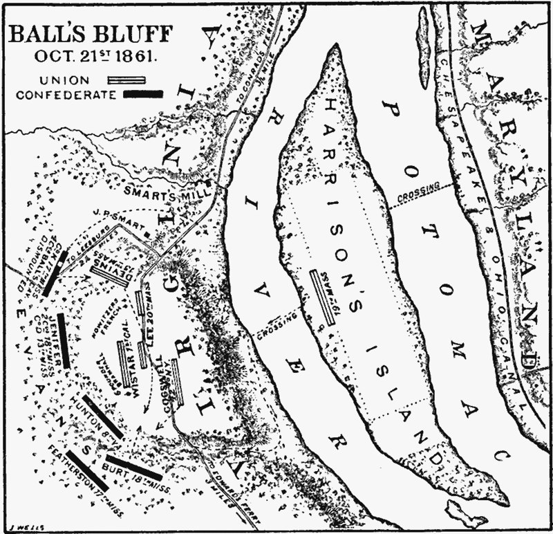

В прошлом выпуске мы рассказали про первое сражение при Булл-Ране, закончившееся для янки весьма плохо. Товарищ Авраам, тем не менее, намека не понял и продолжал бурную деятельность. Помимо уже упоминавшейся резолюции «Родина в опасносте!11», были предприняты кадровые перестановки в армейском командовании Союза. Главным был назначен генерал Макклеллан, у которого хоть что-то где-то получалось. Началась подготовка ко второму заходу на Ричмонд.

Тут читатель может спросить — а что же доблестные дикси не продолжили натиск и не погнали северян до самого Вашингтона и дальше? Отвечаем: им не очень-то и хотелось. Ну в самом деле — штурм столицы, пепелища, тысячи сопутствующих жертв среди гражданских? Нафиг надо.
Позиция КША была проста: вот мы отделились и сидим тут окопавшись красивые. Вы недовольны — ну так это ваша проблема, решайте ее как-нибудь, у нас все наготове.
Точка зрения вполне здравая — конфедератам действительно было нужно всего лишь сохранить статус-кво до тех пор, пока Север не устанет и не отвалит подобру-поздорову. Поэтому серьезных наступательных действий они пока что не предпринимали.
В отличие от янки. 20 октября небольшая группировка северян под руководством бригадного генерала Стоуна по приказу главнокомандующего начала артиллерийский обстрел вражеского берега реки Потомак. Больше с целью показать супостату, что США настроены серьезно, а заодно понять, как будут отвечать дикси и где они там вообще сидят, нежели из стремления нанести серьезный ущерб.
Так как уже был почти закат, полковник Эванс, командовавший обороной южного берега, на жалкие китайские фейерверки решил не отвечать — на кой бесцельно кидаться снарядами вслепую? Даже переход реки примерно сотней янки его не впечатлил — тоже мне, высадка в Нормандии.
Озадаченный полным отсутствием движения со стороны противника, Стоун отозвал войска обратно и в ночи послал на другой берег разведчиков, пытаясь понять причины такого равнодушия южных друзей. Может, их там и нет вообще? Молодой и неопытный капитан, какое-то время потупив и пошарившись туда-сюда в темноте, таки углядел что-то, крайне напоминающее армейский лагерь, после чего вернулся к командованию и радостно сообщил о находке.
Ага! Под покровом ночи примерно триста северян втихаря переправились через реку с важной боевой задачей — как только начнется рассвет, напрыгнуть на вражий лагерь, устроить там максимальный гевальт, пожечь горящее, попортить негорючее, нагадить супостатам в кашу и смотаться обратно, пока те спросонья пытаются понять, что это вообще было.
План неплохой, но сразу после рассвета выяснился один важный нюанс. Никакого лагеря южан в пределах видимости не было. Зоркий капитан разведчиков, судя по всему, принял за палатки группу деревьев. Спецотряд взял паузу на подумать и переварить неожиданное. На северный берег, сетуя на медлительность господ Попова, Теслы и Эдисона в деле радиостроения, ушли курьеры, передавать, что «ошибочка вышла».
Печально завывая от идиотии своих подчиненных, Стоун отправил на другой берег еще 350 человек с целью усиления штурмовой группы. Все-таки, солнце уже встало, а у южан может не быть таких серьезных проблем со зрением, как у прекрасного капитана. После пополнения личного состава северные силы должны были все-таки найти, куда делись дикси, а если все пойдет успешно, то и посмотреть, какова ситуация в Лисберге — городке неподалеку.
Пока курьеры спешили обратно вместе с пополнением, в лагерь прибыл полковник Бейкер, недавно избранный действующий сенатор, знатный оратор-популист и близкий друг и сторонник Линкольна. Основным занятием Бейкера до сих пор была совершенно не война, а громогласные речевки на тему патриотизма и готовности умереть за страну, поэтому его боевой опыт был в лучшем случае теоретическим.
Полковнику было предложено самому сгонять на другой берег и посмотреть, что там вообще происходит, а далее решать по ситуации — требовать еще подмоги или же отводить все войска обратно.
Еще не успев переправиться на юг, сенатор встретил вторую порцию курьеров, сообщивших, что дикси таки найдены, но счастья это никому не принесло — они там в некислом количестве, и все лезут и лезут, поэтому разведка как-то совсем не задалась. Бейкер тут же развил самую кипучую деятельность и скомандовал вообще всем наличным войскам бросить все и в темпе вальса шпарить на южный берег, выручать братушек-разведчиков.
Что мешало сенатору сперва посмотреть на реку и посчитать количество наличных лодок — не очень понятно. Переправа затянулась. Ноя с ковчегом поблизости не нашлось, а в обычное плавсредство очень тяжело впихнуть невпихуемое. Неразбериха, суета и вопли. Из-за этого северяне перебирались к месту битвы огромными группками по полтора инвалида, что никакого влияния на ход боя оказать не могло.
Сам сенатор переправился одним из последних, только для того, чтобы своими глазами увидеть свежие подкрепления, подошедшие к силам КША, а также поймать всей холеной тушкой несколько ласковых южных пуль. С другой стороны, Бейкер по сей день остается единственным действующим сенатором США, погибшим на поле боя — тоже достижение.
После смерти полковника северяне попробовали было драпать, но, как уже говорилось, с лодками все было плохо. Уплыли далеко не все. Большая часть войск была тупо взята в плен, но примерно 250 человек по реке добрались аж до Вашингтона. Вот только совсем в неживом виде, посредством течения.
Сложно описать объемы радости, которые известия о еще одном разгроме, а также эти посылки водной почтой произвели в столице. Общие потери составили порядка тысячи человек — больше половины всего личного состава, задействованного в операции. Несмотря на то, что Макклеллан особых претензий к Стоуну не имел, над бригадным генералом начали сгущаться тучи. Сенат был в ярости, Линкольн тоже. Был немедленно создан Объединенный комитет Конгресса по ведению войны — собрание политиков, которые решили, что куда лучше вояк понимают, как нужно действовать.
Понимая, что надо как-то выпутываться, Стоун написал отчет, в котором очень вежливо и аккуратно намекнул, что хоть покойный и был человеком отменных личных качеств и непревзойденной храбрости, в тактике и стратегии сенатор понимал как-то не очень, потому и. Отчет просочился в газеты, а далее началось категорически некрасивое. Ближайшие политические сторонники Стоуна публично отреклись от генерала и заявили, что Бейкер был просто-таки аватарой Александра Македонского, и если бы не его начальство, то янки бы уже брали Ричмонд. Вслед за обвинениями в непрофессионализме посыпались другие. Дескать, Стоун не очень-то верен США, неоднократно замечен в подозрительных связях с южанами, да и вообще — известный рабовладелец и даже — о ужас! — пару раз возвращал беглых рабов хозяевам. Тут надо заметить, что два последних пункта обвинения на тот момент совершенно не противоречили ни законам штата, ни США в целом. Но разве это кого-то волнует?
Стоун даже не мог толком оправдаться — главнокомандующий по понятным причинам запретил выносить разбор стратегии и тактики наступления на всеобщее обозрение, и ответить бригадному генералу на обвиняющий вой было нечего.
В феврале 1862 года Чарльз Стоун был арестован и отправлен в военную тюрьму (причем билет на поезд до места назначения он был вынужден оплатить сам — казна решила на такие мелочи не размениваться). Выпустят его только в августе, причем никаких официальных обвинений так и не будет предъявлено. Согласно одной из версий, приказ о его аресте был отдан лично Линкольном. Сам он высказывался на эту тему довольно уклончиво, мол «во время такого национального бедствия пусть лучше один генерал сидит без суда, чем мы будем снимать с фронтов хороших офицеров, чтобы его судили».
В сражении при Бэллс-Блафф США опять потерпели разгромное поражение. Тем не менее, в другой стихии они чувствовали себя куда более уверенно и попортили Югу немало крови.
План «Анаконда» и броненосцы —в следующем выпуске.